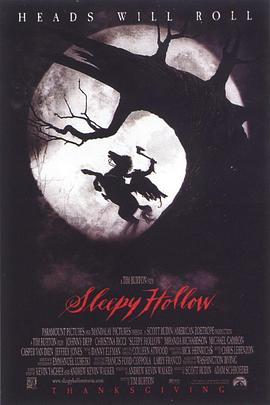

断头谷 / Sleepy Hollow
又名：无头骑士 / 无头睡谷 / 睡谷传奇 / 寂静山谷
上世纪的魔幻片，感觉成功之处在于对男主、女主的形象塑造上。欧美上世纪的服饰还是很有爱的 233
作品信息
| 导演 | 蒂姆·波顿 |
| 编剧 | 华盛顿·欧文 / 凯文·雅格 / 安德鲁·凯文·沃克 |
| 主演 | 约翰尼·德普 / 克里斯蒂娜·里奇 / 米兰达·理查森 / 迈克尔·刚本 / 卡斯帕·范·迪恩 / 杰弗里·琼斯 / 理查德·格雷弗斯 / 伊恩·麦克迪阿梅德 / 迈克尔·高夫 / 克里斯托弗·沃肯 / 马克·皮克林 / 丽莎·玛丽 / 史蒂芬·威丁顿 / 克莱尔·斯金纳 / 克里斯托弗·李 / 艾伦·阿姆斯特朗 / 马克·斯伯丁 / 杰西卡·奥伊罗 / 托尼·毛德斯雷 / 彼得·吉尼斯 |
| 类型 | 悬疑 / 恐怖 / 奇幻 |
| 制片国家/地区 | 美国 / 德国 / 英国 |
| 语言 | 英语 / 拉丁语 |
| 上映日期 | 1999-11-19(美国) |
| 片长 | 105分钟 |
| IMDb | tt0162661 |
最后一次看到是 2026-08-01T11:07:27+10:00 · 豆瓣原页